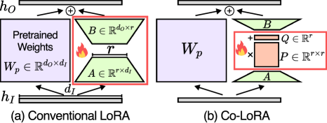
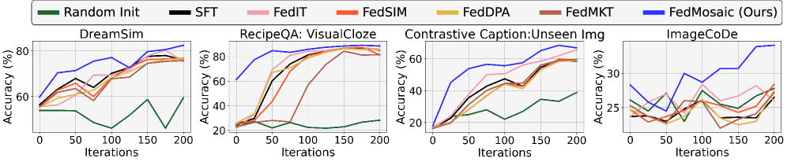
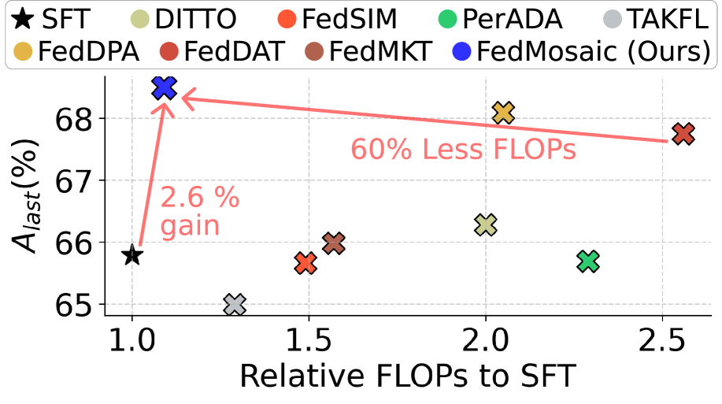

Model-dependent LoRA
Different shapes
Model 1 · d₁
A₁
×
B₁
Model 2 · d₂
A₂
×
B₂
ICLR 2026
Collaborative Model Personalization on
Heterogeneous Multi-Modal Clients
1KU Leuven 2Seoul National University 3Sungkyunkwan University
Different clients can use different-sized—and even different-family—models, yet still learn from one another.
The problem
LoRA’s input and output matrices inherit each model’s hidden dimension. When clients use different architectures, those matrices no longer have compatible shapes. Co-LoRA moves collaboration into the shared low-rank space instead.

The core idea
Co-LoRA inserts a dimension-invariant matrix P and vector Q between the original LoRA projections. The model-specific A and B stay frozen; only P and Q are optimized and exchanged.
P ∈ ℝr×r and Q ∈ ℝr depend only on the common LoRA rank r, not on model width.
Public samples align A in the shared rank space with MSE, then align width-dependent B through CCA.
Models are split into the same number of blocks. Co-LoRA modules at corresponding relative depths are aggregated.
Key results
FedMosaic combines two complementary ideas:
Bars show mean Alast (%) in the method order reported by the paper. Error estimates and AAUC are available in the full tables.


Strong performance on both clients’ own data (Self) and other clients’ data (Others).
Co-LoRA extends beyond size heterogeneity to cross-family collaboration.
Knowledge transfer remains useful across different hidden widths—not only between identical clients.
See the paper for confidence intervals, AUC metrics, full ablations, and additional settings.
Want the details?
Full formulations, alignment derivations, benchmark design, ablations, and additional results are available in the paper.